Server Control Studio
操作ガイド
選ぶ。設定する。確認して、生成する。
AIペンギンと一緒に、Docker構成を一歩ずつ。

ツール概要・動作環境
画面例は本バージョンの専用サンプルです。画像内の一時フォルダやDBのダミー値は説明用で、実際には利用する保存先・認証情報に合わせて設定してください。
Server Control Studioは、モジュールを選び、入力した設定からdocker-compose.ymlと、必要なサービスのDockerfile等を生成するデスクトップツールです。生成機能と、登録したComposeプロジェクトを操作する「Docker環境管理」を備えています。業務アプリのソースコードを自動作成するものではありません。
| 目的 | 必要なもの |
|---|---|
| アプリを起動する | Windows x64向けのInstaller版、またはPortable版を使用します。Node.jsやElectronを別途インストールする必要はありません。 |
| 構成ファイルを生成・保存する | Docker環境は不要です。ファイルは利用者が指定した場所へ保存します。 |
| 生成構成を実際に動かす | Docker EngineとCompose v2が必要です。WindowsではDocker Desktop（WSL 2方式）を起動し、Docker CLIをPATHから実行できる状態にします。構成に応じてアプリコード・依存ファイルも必要です。 |
| このHTMLを読む | 画像・CSS・JavaScriptを含むフォルダ一式と、ローカルHTMLを表示できるブラウザ。外部CDNは使用しません。 |
Windows配布版と同梱マニュアル
- インストールしたServer Control Studioを起動します。
- 「ヘルプ」→「ユーザーマニュアル」を選ぶと、既定のWebブラウザでこのマニュアルを開きます。
- HTML・画像・レシピは同梱されているため、閲覧にインターネット接続は不要です。外部の実行結果リンクを開く場合のみ接続が必要です。
Windows配布版を起動する
- Installer版はインストール後、スタートメニューから起動します。Portable版は書込み可能な専用フォルダへ置き、EXEを起動します。
- 「ヘルプ」→「バージョン情報」で
v0.1.1を確認します。 - 更新前には設定・プロジェクトを別の場所へバックアップしてください。
画面構成と基本操作
メイン画面にはモジュール・構成入力・生成結果・Docker環境管理の4タブがあります。最初の3タブで構成を作り、4番目のタブで保存したComposeを登録して操作します。管理用の別ウィンドウは開きません。
4タブとモジュール選択
「モジュール」でNode.js アプリを選択した例です。上部のタブで画面を切り替えます。
| タブ | ここで行うこと |
|---|---|
| モジュール | 使うサービスを選択・解除する。 |
| 構成入力 | プロジェクト名・ポート・バージョン・永続化等を設定し、各モジュールの「設定確認」にチェックする。 |
| 生成結果 | Composeと追加ファイルを確認し、個別または一式で保存する。 |
| Docker環境管理 | 保存済みComposeを登録し、診断・編集・Docker操作を行う。生成結果の編集中データとは独立。 |
初めての構築は第11章のNode.jsサンプル手順で、生成から起動確認まで順番に進められます。
目次へ戻る ↑モジュールの選択
「モジュール」タブで利用する行をクリックします。もう一度押すと解除できます。選択された行の背景とアイコン枠がテーマに応じて変わります。
ライトテーマで選択した行
- 行をクリックして選択・解除します。ライトでは薄灰色と濃灰色の枠になります。
ダークテーマの選択ハイライト
ダークテーマの選択ハイライト。配色以外の操作は共通です。
枠は未選択時から透明3px分を確保し、アイコン枠の外寸は66px固定です。選択・解除で文字位置や行の高さは変わりません。左端の縦アクセント線はありません。
| テーマ | 選択背景 | アイコン枠 |
|---|---|---|
| 自動 | OS設定に応じてライト／ダーク | 同左 |
| ライト | #E8E8E8 | #555555 |
| ダーク | #263A54 | #60A5FA |
| 青 | #E0EDFF | #2563EB |
| 緑 | #E0F5E7 | #198754 |
| 黄 | #FFF2B3 | #C58A00 |
| オレンジ | #FFF0D6 | #C86416 |
| 赤 | #FFE5E5 | #DC3545 |
| ピンク | #FFE5F0 | #D63384 |
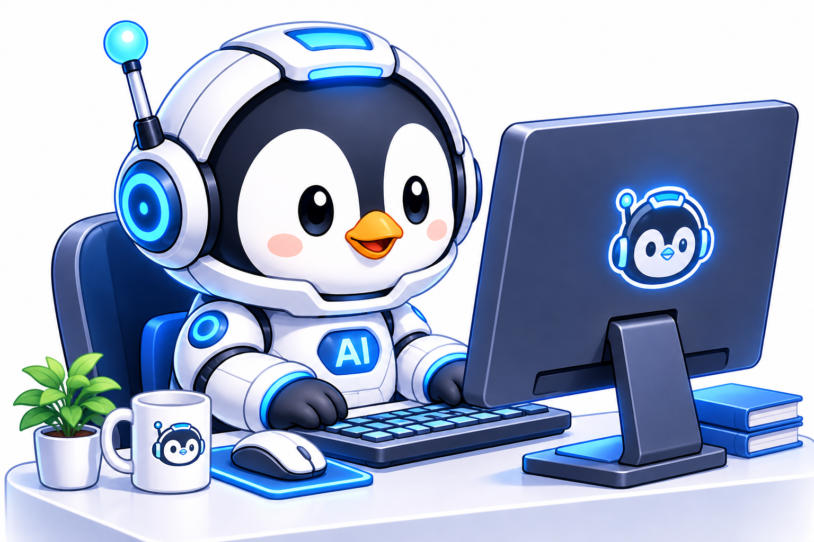
必要なモジュールだけ選ぶ
複数モジュールを選ぶと、それぞれが「構成入力」に表示されます。依存するDBを必要とするモジュールもあるため、レシピの組み合わせを確認してください。
構成入力・設定確認
入力 → 確認 → チェック
- 「構成入力」タブを開き、「共通設定 / 構成実行」の「プロジェクト名」を入力します。サービス名等の接頭辞になります。
- 初期表示では先頭のモジュールだけ展開されています。各ヘッダーのモジュール名または矢印を押して開閉します。複数を同時に開けます。
- バージョン系列、イメージ形式 / 完全タグ、公開ポート、DB設定、データ保存方式などを確認します。
- 確認したモジュールの右上にある「設定確認」に手動でチェックを入れます。チェックだけではパネルは閉じません。
- 全件確認済みになったら「構成を実行」へ進みます。0件選択時や未確認がある間は生成できません。
モジュール別の折りたたみと確認
- 確認済み件数を確認します。最初は0件です。
- モジュール名・矢印で開閉します。
- 入力を確認して「設定確認」にチェックします。
全件確認後は構成を実行できます
- 全件確認済みで「構成を実行」が有効になります。
- 確認済み1 / 1です。
設定値変更で確認済みが解除されます
- 変更後は「構成を確認」になり、生成できません。
- 変更したMySQLだけ再確認が必要です。
パスワードは表示と実データを分けて扱います
MySQLの秘密値は初期状態でマスク
- 実データを保持したまま表示だけをマスクします。
- 「パスワードを表示」で見え方だけを切り替えます。
- 「コピー」は明示操作時だけ実値をコピーします。
- 初期表示はマスクです。「パスワードを表示」で表示のみを切り替えます。パネルを閉じると再びマスクされます。
- 「コピー」はマスク中でも実際の値をコピーします。空欄では使えず、成功通知にパスワード自体は表示されません。
- クリップボード履歴や他のアプリに読まれる可能性があります。必要なときだけコピーしてください。自動消去はしません。
- 対象はMySQL・MariaDB・PostgreSQLのパスワード、LaravelのDBパスワード、phpMyAdminのDBパスワードです。WordPress・Redmineは選択したDBの設定を利用し、専用の秘密値入力欄はありません。
- 画面上のマスクは暗号化ではありません。生成したComposeには必要なパスワードが平文で含まれるため、共有・公開前に内容を確認してください。
永続化とイメージ情報
独立した「永続化」タブはありません。各モジュール内の「データ保存方式」を使います。名前付きボリュームとバインドマウントでは表示項目が切り替わります。「参照」はバインド先の既存フォルダを選ぶ際に利用します。
「Dockerイメージのバージョン情報」の「オンライン更新」は、Docker Hubのメタデータを取得して選択候補を更新します。イメージやモデル自体のダウンロード・起動ではありません。取得に失敗した場合も既存キャッシュを維持します。
目次へ戻る ↑構成を生成する
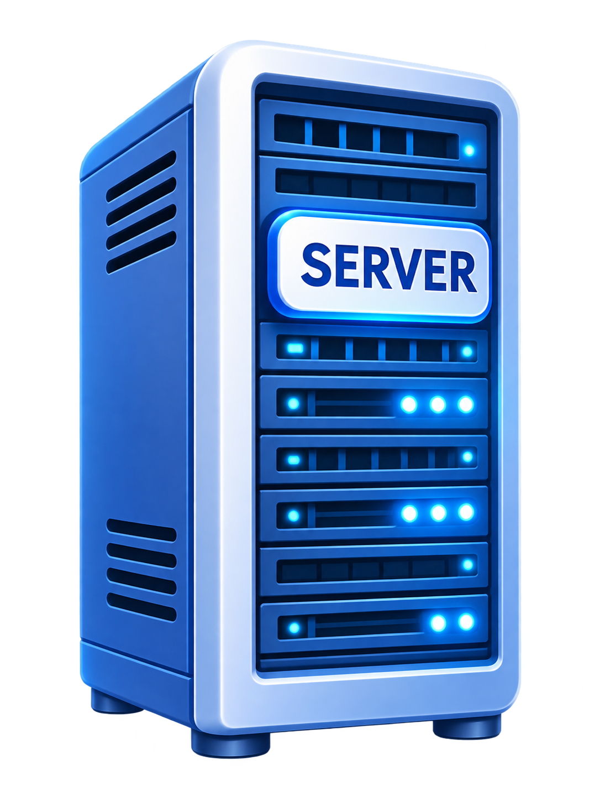
全件確認後に構成を実行
確認済み件数が全件になり、ボタンが「構成を実行」になってから押します。赤い「構成を確認」は未確認がある状態で、クリックできません。
- 全モジュールの「設定確認」にチェックがあることを確認します。
- 「構成を実行」を押します。「ファイル」→「生成開始」でも同じ確認条件が適用されます。
- エラーが表示された場合は、対象の入力欄へ戻って修正し、再確認します。ポート範囲・重複・DB依存・イメージの検証はチェック後も実行されます。
- 生成後、「生成結果」タブを開きます。
Node.jsは利用者のアプリとpackage.json・整合するlockfileが必要です。Flaskは利用者のPythonコードと依存定義、Laravelはソース・Composer依存・APP_KEY等が必要です。アプリがこれらを完成した本番アプリとして生成することはありません。
目次へ戻る ↑生成結果とファイル保存
一式保存の選択ダイアログは、設定の「プロジェクトフォルダ」を初期位置にします。未設定・不存在なら標準のフォルダ選択へ戻ります。選択先の直下にプロジェクト名のフォルダを作り、Composeと関連ファイルを同じ構造で保存します。「Dockerfile保存場所」「docker-compose.yml保存場所」は個別保存用です。
同名フォルダでは既存保存・別名・キャンセルを選べます。上書き対象を確認してから保存します。Node.jsのpackage.json・lock・server.cjsのどれかが既にある場所では、その初期アプリ一組は上書きせず保持します。表示される保存先と保持通知を確認してください。
左にdocker-compose.yml、右にサービス別Dockerfile・追加設定ファイルを表示します。右の「表示・保存するファイル」を切り替えると、相対パスと内容を確認できます。コード領域はウィンドウの高さに追従し、長い内容は内部スクロールします。
生成結果と一式保存
Node.jsをプロジェクト名nodejs-basic・公開ポート18080で生成した例です。Composeの先頭はservices:で、version属性はありません。
追加ファイルを切り替える
右の選択欄でDockerfileや専用dockerignore等を切り替えます。ダウンロードは表示中のファイル、一式保存は生成された全ファイルを対象にします。
構成ファイルの配置・起動ガイド
下部のボタンで開くガイドです。「閉じる」で生成結果に戻ります。必要なソースや配置は構成ごとに確認してください。
推奨：プロジェクト一式で保存する
- 「生成ファイル一式を保存」を押します。
- Windowsのフォルダー選択画面で親フォルダ（例：ドキュメント内のDockerProjects）を選びます。親の直下にプロジェクト名のフォルダが作られます。
- プロジェクト名が
nodejs-basicならDockerProjects/nodejs-basic/へComposeと追加ファイルを相対構造のまま保存します。 - 同名フォルダがある場合は「既存フォルダに保存」「別名で保存」「キャンセル」から選びます。既存フォルダへの保存では上書き対象を確認してください。別名は
nodejs-basic-2等の空き名が提案されます。 - 完了後に表示される保存先フルパスを確認します。失敗時は成功表示されません。生成対象以外の既存ソースを削除する操作ではありません。
DockerProjects/
└── nodejs-basic/
├── docker-compose.yml
└── nodejs/
├── Dockerfile.nodejs
└── Dockerfile.nodejs.dockerignore一式保存には、初期生成ONのNode.js起動確認アプリが含まれます。その他のアプリのソースや依存ファイルは利用者が準備してください。Node.jsサンプル補完は管理タブで別途実行します。Nginx・Apacheは初期HTML、設定ファイル、非公開のsetting.htmlなども生成します。setting.htmlはWeb公開ディレクトリに置かないでください。
個別に保存・コピーする場合
- 左の「ダウンロード」で
docker-compose.ymlを保存します。 - 右の選択欄で必要なファイルを選び、右の「ダウンロード」で1ファイルずつ保存します。相対パスに対応するサブフォルダを作成してください。
- 「コピー」は表示中の内容をコピーします。「クリア」は表示内容を消すので、必要なら先に保存してください。
- 下部の「構成ファイルの配置・起動ガイド」で必要ファイルと配置を確認します。ガイドはダイアログで開きます。
保存先例：%USERPROFILE%\Documents\DockerProjects\nodejs-basic\。「ドキュメント」がOneDrive等へ移動している場合は実際の場所を確認してください。任意の保存場所も選べます。ZIP出力はありません。
設定・テーマ・About
「設定」→「設定...」を開く
左メニューの「フォルダ設定」と「外観」は別の確定操作を持っています。
| 操作 | 確定する内容 | 画面を閉じるか |
|---|---|---|
| 外観の「適用」 | 選んだテーマを即時反映・永続保存。パス入力の検証とは独立。 | 閉じません |
| 下部の「保存」 | フォルダ設定だけを検証して保存。テーマには関与しません。 | 成功通知後も閉じません |
| 「初期化」 | アプリルート以下に既定フォルダを作り、入力欄へ設定。永続保存は別途「保存」。 | 閉じません |
| 「閉じる」／Esc | 未保存フォルダ・未適用テーマの入力だけを破棄。確定済み設定は維持。 | 閉じます |
フォルダ設定
フォルダ設定と保存・初期化・閉じる
- 「初期化」は既定フォルダを作り入力します。保存は別操作です。
- 「保存」はフォルダ設定だけを確定します。
- 「閉じる」は未保存入力を破棄します。
プロジェクトフォルダ、docker-compose.yml 保存場所、Dockerfile 保存場所、ログ保存場所を指定します。現行仕様では空欄を許容します。「保存」を押すと、空欄ではないパスが存在するフォルダかを検証します。
アプリのルート/ ├── Project/ │ ├── docker-compose/ │ └── Dockerfiles/ └── logs/
「初期化」が作る既定の名前は上記です。既存ファイルやリンクとの衝突・書き込み権限で作成に失敗した場合は、説明を確認してください。既存ファイルを削除・上書きする操作ではありません。
不正なパスはフォルダ設定で修正
- 最初の不正な入力欄へ移動します。
- 項目名と修正方法が下部にも表示されます。
保存時に不正なパスがあれば「フォルダ設定」に自動で切り替わり、問題の欄が強調され、最初の欄へフォーカスします。存在するフォルダを選ぶか、任意項目を空欄にして再保存してください。保存失敗時も入力内容は保持されます。
なお、現在の実装ではアプリ自身の docker-builder.log はこのログ保存場所に切り替わらず、開発時はアプリルート、配布版は実行ファイルと同じフォルダにあります。Aboutに表示される実際のパスを確認してください。
テーマを適用する
9テーマの選択と適用
- 選択だけでは外観は変わりません。
- 「適用」で外観へ反映し、その場で保存します。
適用後は保存ボタン不要
- 「適用中」「保存済み」を確認します。
- 閉じても適用済みテーマは維持されます。
- 左メニュー「外観」を開き、9種類のテーマカードから選択します。この段階では外観は変わりません。
- 「適用」を押すとアプリ全体へ即時反映され、その場で永続保存されます。下部の「保存」は不要です。
- 「閉じる」やEscで閉じても、適用済みテーマは維持されます。適用せずに閉じた選択は破棄されます。
- 次回起動時も適用済みテーマが復元されます。「自動」はOSのライト／ダークに追従します。
メイン画面からテーマを切り替える
- Server Control Studioのメイン画面を開き、右上のテーマ切替ボタンを確認します。ボタンには現在のテーマ名が表示されます。
- 「ライト」のときに1回クリックすると「ダーク」になり、メイン画面全体の配色がすぐに変わります。
- 「ダーク」でもう一度クリックすると「青」になります。以降は「緑 → 黄 → オレンジ → 赤 → ピンク → ライト」の順に切り替わります。
- 選んだテーマは保存され、次回起動時にも適用されます。
ライトテーマのメイン画面
メイン画面右上のボタンに「ライト」と表示されています。
ダークテーマのメイン画面
メイン画面右上のボタンに「ダーク」と表示されています。
右上のボタンは、設定画面を開かずに順番にテーマを切り替えるための操作です。ライトへすぐに戻したい場合や、好きなテーマを直接選びたい場合は、設定画面の「外観」でテーマを選び「適用」を押します。
テーマはすぐに反映され、フォルダ設定にエラーがあっても独立して適用できます。右上のテーマ切替ボタンにプレビューやキャンセルの操作はありません。
Aboutとログ
バージョン情報
アプリ名・バージョン・開発者・ライセンスを確認できます。ログの保存先は画面下部に表示されます。
「ヘルプ」→「バージョン情報」でアプリ名、現在のバージョン、開発者、ライセンス宣言、ログの実際の保存先を確認できます。バージョンはアプリ情報から自動取得されます。利用条件は同梱のLICENSE.txtで確認できます。
GitHubリンクは固定された公開プロジェクトページを外部ブラウザで開きます。GitHub認証・トークン入力・構成ファイル送信の機能ではありません。「閉じる」またはEscで戻ります。
目次へ戻る ↑組み合わせ例
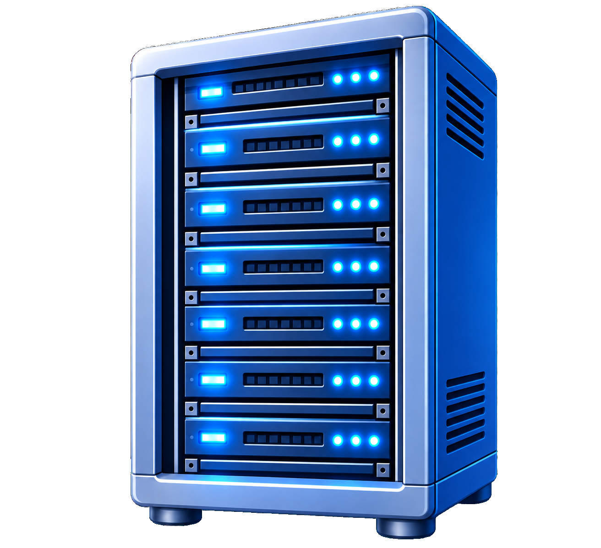
| まず試す構成 | 確認すること |
|---|---|
| Nginx単体 | 静的Web公開 |
| Apache単体 | 静的Web公開 |
| Node.js単体 | 開発用HTTPアプリ |
| Nginx＋Node.js（独立HTTP） | NginxとNode.jsの独立HTTP応答。リバースプロキシ連携は含まない。 |
| Python Flask単体 | Python開発用HTTPアプリ |
| PostgreSQL単体 | SQLデータベース |
上級へ進む構成例
級の判断基準は難易度の目安を参照してください。
| 構成例 | 学ぶこと |
|---|---|
| Nginx＋Node.js＋PostgreSQL＋Redis | リバースプロキシ、DB更新、キャッシュの失効とTTL、依存サービスの準備待ちを横断して扱います。 |
| Nginx＋Flask＋PostgreSQL＋Redis | Pythonアプリ・DB・Redisの接続、DB更新後のキャッシュ失効、プロキシと準備待ちを横断して扱います。 |
| Nginx＋WordPress＋MariaDB＋phpMyAdmin | 公開URLとプロキシの整合、DB管理、DBとWordPressファイルの両方のバックアップ・別環境への復旧を扱います。 |
エラーと対処
| 困ったとき | 原因と対応 |
|---|---|
| 「構成を確認」で押せない | 未確認が残っています。各モジュールの入力を見直し「設定確認」をチェックします。選択0件も生成不可です。 |
| 確認済みだったのにチェックが外れた | 実際の設定値やプロジェクト名が変更されています。変更箇所を確認して再チェックします。 |
| ポートの重複・範囲エラー | 各ホスト公開ポートを1〜65535の異なる値にします。本稿のレシピは原則TCPです。TCP/UDP切替UIはありません。 |
| DBが必要というエラー | WordPress、Laravel、Redmineなどに必要な対応DBを選択し、サービス名・DB名・ユーザー・パスワードを揃えます。 |
| Dockerfileやpackage-lock.jsonが見つからない | Compose基準の相対パスと実際の配置を確認します。Node.jsのpackage.jsonとlockは利用者が整合したものを用意します。 |
| フォルダ設定を保存できない | 問題の欄と下部の説明を確認し、存在するフォルダまたは空欄に修正します。設定ファイルへの書き込み権限も確認します。 |
| 画面が表示されてもDB連携できない | DBの準備完了を待ち、接続先はコンテナ内のlocalhostではなくComposeのDBサービス名にします。HTTP成功だけでSQL成功とは扱いません。 |
| バインドマウントしたらファイルが消えたように見える | ホストのマウントがイメージ内ファイルを隠している可能性があります。データ削除と決めつけず、ホスト側の内容・権限・配置を確認します。 |
| イメージ更新が失敗する／古い・未検査表示 | 通信・配布元の制限、カタログ状態を確認します。未検査は安全確認済みではありません。サポート切れは避け、例外を安易に使わないでください。 |
生成後にDocker環境で確認する手順
docker compose config -q docker compose up -d --build docker compose ps docker compose logs --tail=100 docker compose down
構成フォルダで実行します。追加の compose.manual.yml があるレシピでは、全コマンドで -f docker-compose.yml -f compose.manual.yml を併用します。レシピごとのURLやSQL確認も実施してください。
応用と補足資料
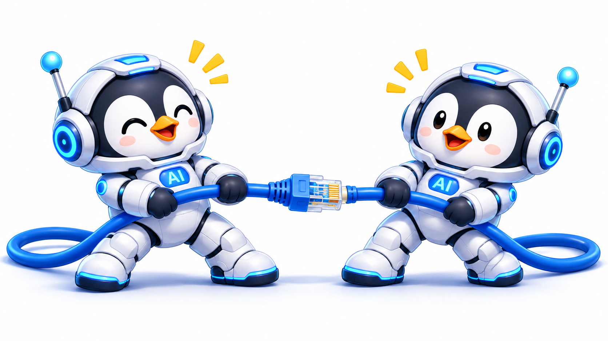
生成物と追加ファイルを引き継ぐ
レシピでは、アプリ生成ファイルを generated/、利用者が用意するコード・設定の例を additions/ に分けています。実利用時はそれぞれの中身を、レシピで指定する構成フォルダへ配置します。
全19モジュールと役割
| モジュール | 役割・制限 |
|---|---|
| Nginx（Web サーバ） | HTTPの入口・静的ファイル／追加設定でプロキシ |
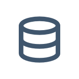 MySQL（DB サーバ） | 永続SQLデータベース |
| Portainer（コンテナ管理 GUI） | 管理UI（接続先は別途必要） |
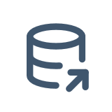 Redis（キャッシュサーバ） | キー・値キャッシュ |
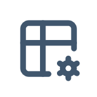 phpMyAdmin | MySQL/MariaDB管理画面 |
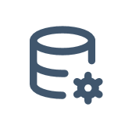 MariaDB（DB サーバ） | 永続SQLデータベース |
| Apache（Web サーバ） | HTTPの入口・静的ファイル／追加設定でプロキシ |
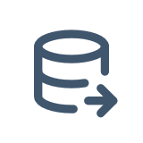 PostgreSQL（DB サーバ） | 永続SQLデータベース |
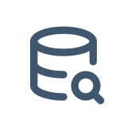 Memcached（キャッシュ） | メモリキャッシュ |
| RabbitMQ（メッセージキュー） | メッセージキュー |
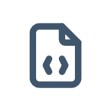 Laravel アプリ | PHP CLI・HTTP 8000の開発サーバー |
| Node.js アプリ | HTTPアプリ・利用者がソースを用意 |
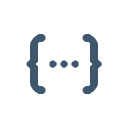 ™Python アプリ（Django / Flask） | Flask開発用HTTPアプリ |
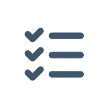 Redmine（プロジェクト管理） | 課題管理アプリ |
| WordPress（CMS） | Apache内蔵CMS |
| Jenkins（CI サーバ） | ジョブ実行・開発検証 |
| Ollama（ローカル LLM） | ローカルモデルAPI |
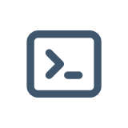 SteamCMD（ゲームサーバ用） | ゲーム資材の取得ツール |
| Let's Encrypt（Certbot） | 証明書取得用ワンショット処理 |
- LaravelはPHP公式CLI＋開発サーバーのHTTP 8000が基本です。PHP-FPMをHTTPポートとして公開する方式ではありません。本番用構成ではありません。
- Certbotの証明書発行、Nginx/Apache側のHTTPS連携は公開ドメイン・DNS・到達性・設定が必要で、このマニュアルの実動作検証範囲に含みません。
- Portainerは初期UIまでの例で、生成ComposeはDockerソケットを自動マウントしません。そのままでDocker管理が完成するとは扱いません。
- OllamaはAPI構成が対象です。モデル取得・GPU・推論の動作は別途準備と確認が必要です。
Docker環境管理：生成から起動・編集まで
Docker Desktop全体を置き換える画面ではなく、登録したComposeプロジェクト単位の構築支援です。ここではNode.js単体を例にします。登録・再読込・診断だけではDocker操作を実行しません。
1. Node.jsを選択して生成する
- 「モジュール」タブで「Node.js アプリ」の行をクリックします。この手順では他のモジュールを選択しません。
- 「構成入力」を開き、上部の「プロジェクト名」に
nodejs-basicを入力します。 - Node.jsパネルを開き、「公開ポート（ホスト側）」を空きTCPポートの例
18080にします。コンテナ内は3000番です。18080が使用中なら別の番号を指定し、以後のURLも変更します。 - イメージ系列・タグは現在選択されている既定値を使います。バージョン欄の実際のイメージを確認してください。起動コマンドは初期値
npm run devのままにします。HTTPサンプル補完を使うため、Dockerfileは変更しません。 - 入力を確認してNode.jsヘッダーの「設定確認」にチェックします。「確認済み 1 / 1」になったら「構成を実行」を押します。設定変更後は対象だけ未確認に戻るため、再度確認します。
Node.jsの構成入力
nodejs-basic、ホスト側18080、内部3000で作る例です。確認前は「構成を確認」が無効表示です。
2. プロジェクト一式を保存する
「生成結果」→「生成ファイル一式を保存」を押し、ドキュメントのDockerProjectsを親に指定します。第6章の構造で保存され、完了表示に実際のパスが出ます。これでDockerfileは保存できますが、Node.jsの実行ソースはまだありません。
3. Composeプロジェクトを登録する
- 4番目の「Docker環境管理」を開き、「プロジェクトを登録」を押します。
- 今保存した
nodejs-basic/docker-compose.ymlを選択します。外部ツールで作成したComposeも登録できます。関連ファイルの基準はComposeの親フォルダです。 - 左の一覧で対象を選び、右のプロジェクト名・フォルダ・サービス一覧を確認します。登録内容は次回アプリ起動時にも残ります。
- 「再読込」は一覧と選択プロジェクトを読み直します。未保存の編集がある場合は先に差分確認・保存してください。
登録直後の不足ファイル診断
左が登録プロジェクト一覧、右が選択対象の内部タブです。この時点ではDockerを起動していません。画面のWindows一時フォルダは説明用です。自分で選んだ保存先を使用してください。
登録済みComposeプロジェクトの一覧
左の名前をクリックして対象を切り替えます。nodejs-basicと外部Composeの説明用プロジェクトを登録した例です。登録だけでは起動しません。
4. 不足ファイルを診断・補完する
- 「構成・不足診断」内の「診断を更新」を押します。
- 「必須の要確認」と「任意」を分けて確認します。同じファイルに複数の不足理由があっても1項目にまとまります。任意の
.envがないだけで必須不足にはなりません。 - 既知のNode.js構成で
package.json・package-lock.json・server.cjsがすべて未作成なら「HTTPサンプル一式の追加内容を確認」が表示されます。 - ボタンを押し、確認画面に出るファイル名と内容を読んで「実行する」を選びます。キャンセルすれば追加しません。
- 診断を再確認します。補完は3000番でHTTP応答する依存なしの最小サンプルです。本番用・業務用アプリケーションの自動生成ではありません。
Node.js HTTPサンプル補完後
アプリ用ファイルが追加され、必須不足がなくなった例です。補完だけではコンテナは起動しません。
nodejs-basic/
├── docker-compose.yml [ジェネレーター生成]
└── nodejs/
├── Dockerfile.nodejs [ジェネレーター生成]
├── Dockerfile.nodejs.dockerignore [ジェネレーター生成]
├── package.json [利用者が承認してサンプル補完]
├── package-lock.json [利用者が承認してサンプル補完]
└── server.cjs [利用者が承認してサンプル補完]既存アプリのファイルが一部ある場合、未知のDockerfile、変更済みDockerfileなどは推測して補完しません。表示された理由に従い、対応するソース・依存ファイルを用意してください。登録しただけで既存ファイルを置き換えることはありません。
5. 実行対象と詳細設定を確認する
「詳細設定」で下表を確認します。既存環境を登録する場合は、以前起動したプロジェクト名とContextに必ず合わせてください。名前を変えると、既存コンテナとは別の対象を操作する可能性があります。
Composeの実行対象を設定
通常は既定値を確認します。変更した場合は「実行対象を保存」で確定します。Docker全体の既定Contextは変更しません。
| 項目 | 指定方法・注意 |
|---|---|
| Composeプロジェクト名 | この例はnodejs-basic。初回名は親フォルダの.envのCOMPOSE_PROJECT_NAME、Composeのname、フォルダ名の順で解決します。構成入力のプロジェクト名はサービス接頭辞にも使われますが、管理側の実行名とは別です。 |
| Docker Context | Windows初期値はdesktop-linux。使いたい接続先を指定します。 |
| Composeの順序 | 1行1ファイル、基底→上書き順。同じ親フォルダ内の最大10ファイルを登録できます。登録済みセットの順序を編集し、追加・削除は再登録で行います。 |
| .envファイルを選択 | プロジェクト内の.env系ファイルを選択します。未指定時は親フォルダの.envをCompose標準として使用。ファイル内容は管理画面に表示しません。指定したファイルは実在が必要です。 |
6. Dockerを起動しブラウザで確認する
- 「Docker操作・ログ」を開き、「Engine接続確認」を押します。接続成功を確認します。失敗時はDocker Desktopの起動、Context、Docker CLIのPATHを確認してください。
- 「構成検証」を押します。Composeの設定・参照をDockerで解決します。構文検証成功だけではビルドやHTTP応答の成功は保証されません。
- 「ビルド」でイメージを作成できます。「起動」も
up -d --build相当で必要なビルドを行います。確認画面の対象フォルダ・Context・プロジェクト名・Compose順序を読み、「実行する」を押します。 - 画面の処理完了を待ち、「稼働状態」を押します。対象コンテナがrunningか確認してください。
- Webブラウザのアドレス欄へ
http://localhost:18080/を入力します。Server Control Studio HTTP sample OKが表示されれば、このサンプルのHTTP応答を確認できました。 - 応答しない場合は「ログ取得」で起動エラーを調べます。ポート競合や必須ファイル不足を直し、必要に応じて再ビルドします。
Docker操作・ログの操作前画面
上部の各ボタンを利用者が明示操作します。この画像は操作位置の説明であり、起動成功の証拠ではありません。
| ボタン | 動作 |
|---|---|
| 停止 | 対象プロジェクトのコンテナを停止。コンテナ・ボリュームは削除しません。終了時は稼働状態で確認します。 |
| 再起動 | 既存コンテナをrestart。Composeやビルド済みソースの変更を反映する再ビルドの代わりにはなりません。 |
| ビルド / 再構築 | ビルドは通常のbuild、再構築はbuild --no-cache。どちらもビルドだけなので、変更反映にはその後「起動」を行います。 |
| 稼働状態 | 停止中も含めたコンテナ状態を取得。常時監視ではありません。 |
| ログ取得 | 末尾150行を取得。追尾表示ではありません。既知の機密値は非表示になりますが、共有前に内容を確認してください。 |
7. ファイル編集・差分確認・バックアップ
- 「構成・不足診断」の「構成ファイル」で
nodejs/server.cjsを選びます。「ファイル編集」に移ります。 - 説明コメントを追加するなど、小さな変更から試します。編集欄だけ変えても元ファイルには保存されません。
- 「変更差分を確認」を押し、変更前・変更後の強調箇所と検証結果を読みます。差分確認後に再編集した場合はもう一度確認してください。
- 「検証・バックアップして保存」を押し、確認画面を読んで実行します。Composeを保存する場合は保存前の
docker compose config -q成功が必要です。 - 成功時は実際のバックアップパスが表示されます。必要なら記録してください。生成結果タブの内容は自動で同期されません。ファイルの変更をコンテナへ反映する場合は必要なビルドと起動を行います。
編集内容の差分確認
server.cjsに説明コメントを追加した例です。差分確認時は構文確認のみでコードは実行しません。保存は別操作です。
保存完了とバックアップ先
専用サンプルを実際に保存した後の表示です。成功時に出る「バックアップ：」以降が保存先です。編集欄はクリアされるため、続けて編集する場合はファイルを選び直します。
編集前と保存直前のファイルが一致しない場合は保存を中断します。別エディターで変更したときは元ファイルを読み直してください。バックアップはアプリのuserData内compose-management/backups/に保存され、プロジェクトのWeb公開フォルダには置きません。自動復元ボタンはありません。復旧が必要なら表示されたバックアップを元ファイルと照合し、安全な外部エディターで戻してください。
管理範囲とできないこと
- 「選択プロジェクトの登録解除」は一覧から外すだけです。起動中のコンテナは停止しません。必要なら先に「停止」してください。元ファイルやDBデータも削除しません。
- プロジェクト内で診断された通常ファイルを表示・編集します。フォルダ全体の任意ファイル編集ではありません。.env・秘密鍵・secrets参照ファイルは表示・編集対象外です。機密行の非表示表示は保持し、変更・削除・複製できません。
- 外部パス、リンク、変数を含むパス、動的COPY/ADD、include/extendsなどをすべて解決する診断ではありません。補完不可の理由を確認し、Docker自身の構成検証と利用者による配置確認を併用してください。
- 停止は削除ではありません。ボリューム削除・Docker全体の清掃・常時監視・任意コマンド入力・GitHub連携は提供しません。
- 長時間処理には制限時間があります。失敗・タイムアウト後は稼働状態とログを再取得し、実際のDocker側の状態を確認してください。
ライト・ダーク表示の例
ダークテーマの不足診断
管理画面はメインアプリのテーマに追従します。専用のテーマ設定はありません。
ダークテーマのDocker操作
ライト・ダークで同じ操作を利用できます。
1280×720の管理画面
小さい画面では右ペイン内をスクロールして操作します。メイン画面と同じテーマを使います。